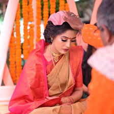
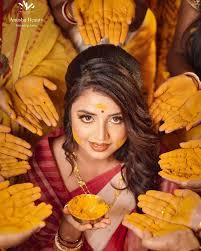
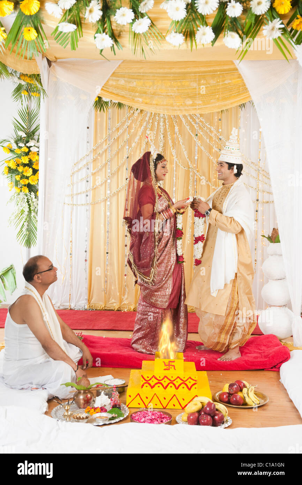
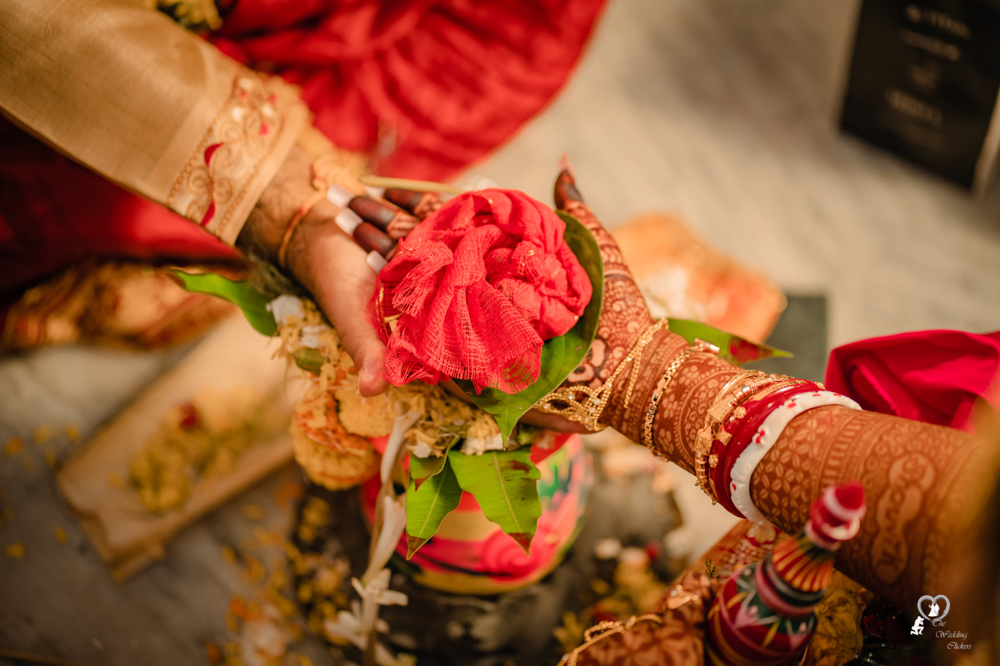
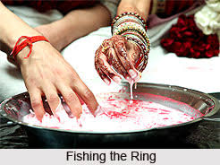
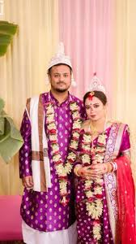

About West Bengal's Culture and Weddings
Weddings in West Bengal
Bengali weddings are elaborate, involving numerous customs and rituals that reflect the state’s culture and values. These ceremonies are typically vibrant and last for several days, characterized by rituals that highlight devotion, respect for elders, and the union of two families.
Pre-Wedding Rituals
Aiburo Bhaat:
Before the wedding, the bride and groom each enjoy a ceremonial meal called aiburo bhaat, marking their last meal as a single person. Friends and family gather to celebrate with a lavish spread of Bengali delicacies.
Ashirbaad:
This ritual involves family elders blessing the bride and groom with rice husks and durva grass, symbols of prosperity and longevity. Gifts are exchanged, marking the family's acceptance of the match. <Gaye Holud:
Similar to the haldi ceremony in other parts of India, gaye holud (turmeric paste ceremony) is a joyful ritual where turmeric paste is applied to the bride and groom. This is believed to bless them with glowing skin for their big day and is often followed by singing and dancing. Wedding Day Rituals Saat Paak and Subho Drishti:
In a traditional Bengali wedding, the bride is carried on a pidi (a wooden stool) and circumambulates the groom seven times. This ritual is called saat paak, symbolizing their bond and unity. Following this is subho drishti (the auspicious glance), where the bride and groom look at each other for the first time on their wedding day, surrounded by blessings and cheers from the gathered family members.
Mala Bodol:
In this ritual, the bride and groom exchange floral garlands, signifying acceptance and love. Sampradan:
This is the Bengali equivalent of kanyadaan, where the bride’s father places her hand in the groom’s hand, signifying the formal handover of the daughter to the groom's family. Yagna and Sindoor Daan: A sacred fire is lit, and the priest chants holy verses, asking for divine blessings. The groom applies vermilion (sindoor) on the bride's forehead, marking her as married. This ritual is significant in the Bengali culture, symbolizing a lifetime commitment. Post-Wedding Rituals Basar Ghar:
After the wedding, the couple spends time with close family members, where traditional games and fun activities are held to relax them. Bashi Biye:
This ritual involves prayers and blessings for the newlyweds at the groom’s home performed the day after the wedding. Bou Bhaat:
This ceremony marks the bride’s acceptance into the groom’s family. She prepares and serves food to her in-laws as a gesture of her willingness to embrace her new home.